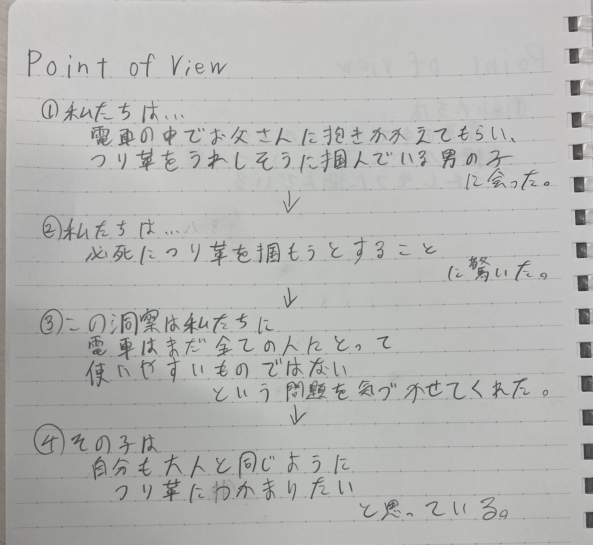
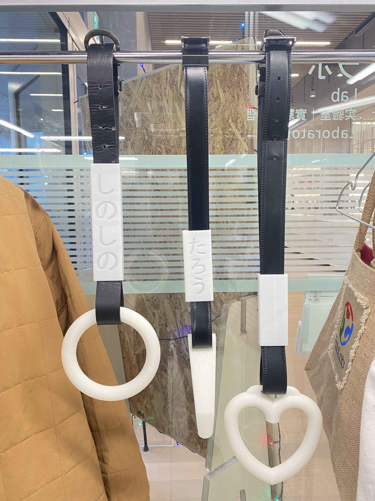
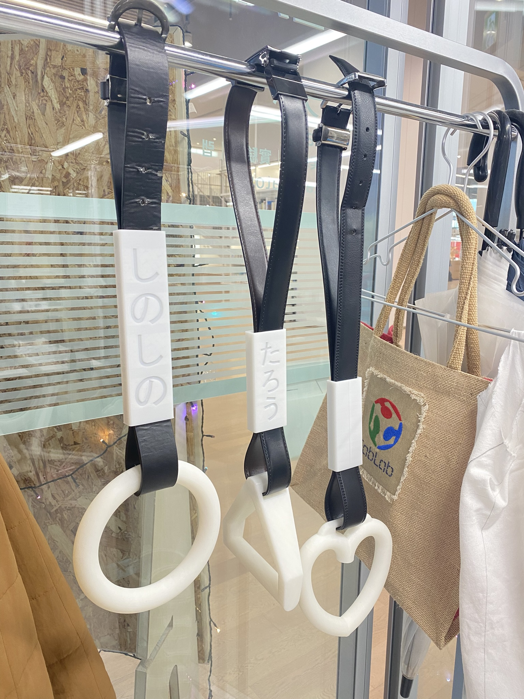
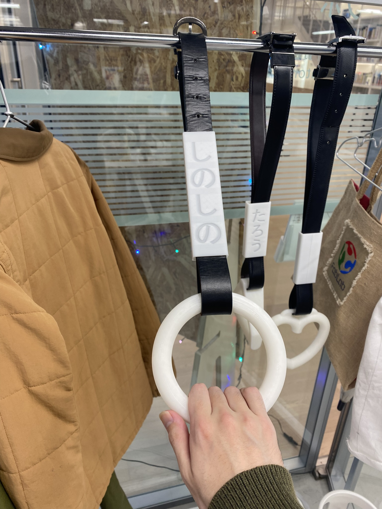
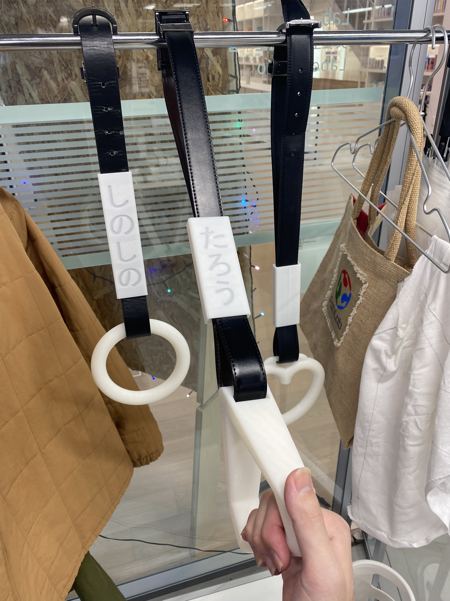
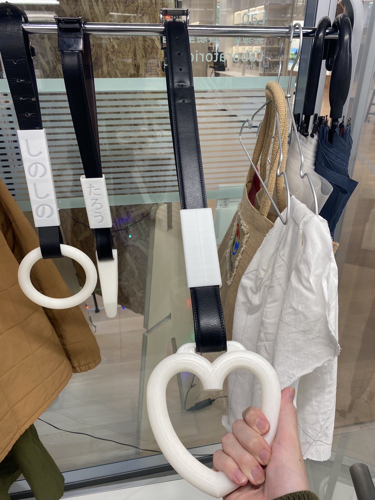

通学中の観察で目に入ったある男の子。
今回はその子のような人のためにデジタルファブリケーションをしました。
取り組む問題

この子は大人と同じようにつり革につかまりたいと考えた。
↓
どうすれば私たちはこの男の子をお父さんの助けなしでつり革に掴ませることができるだろうか？
作ったモノ
マイつり革





作品説明
自分好みにカスタマイズできるつり革。
手掛け(持ち手)とサヤは3Dプリンターで、ベルトは使わなくなったものを再利用。
手掛けのサイズ、デザインを自分好みにできる。今回は大小のリングと五角形とハート型を作った。
一般的なベルトを採用しているため、長さの調節が可能。
サヤに自分の名前を入れることもできる。
電車やバスで既存のつり革や金網にベルトを付ければすぐ使える。
使用機材
3Dプリンター
STLファイル
手掛け リング 大
手掛け リング 小
手掛け 五角形
手掛け ハート型
サヤ